마크는 아래 사진처럼 채널에 접속했을 때 아이디 왼쪽에 프로필 사진처럼 사용되는 기능입니다.
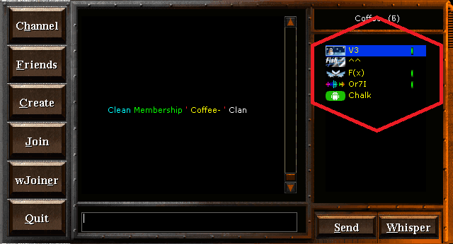
마크 종류는 크게 4가지가 있습니다.
1. 회원 마크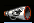
클랜 채널에 가입했다는 전제하에 뜨는 기본 회원 마크입니다.
2. 포인트몰 기본 마크
포인트 몰에는 기본적으로 제공하는 마크가 많습니다.
가격도 싸기 때문에 이용해보세요.
3. 마이 마크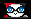 by Lunia
자신이 직접 디자인하거나 디자이너에게 의뢰하여40만 포인트를 지불하여 기본 30일간 사용 가능한 마크입니다.
4. 크리스마스 마크 2015년 마크
매년 12월 25일에 크리스마스 마크를 제공합니다. (매년 디자인 변경됨)
마크가 있을 시 받을 수 없으므로, 받으실 분들은 '/delicon' 명령어를 사용 후 받으세요.
2015년 마크
매년 12월 25일에 크리스마스 마크를 제공합니다. (매년 디자인 변경됨)
마크가 있을 시 받을 수 없으므로, 받으실 분들은 '/delicon' 명령어를 사용 후 받으세요.
채널에서 나와 다른 사람들의 마크가 안보인다면 wLauncher를 실행 후 설정 카테고리에 들어갑니다.
아래 사진 맨 밑 빨간 테두리 부분에 있는 설정을 체크하면 잘 보입니다.
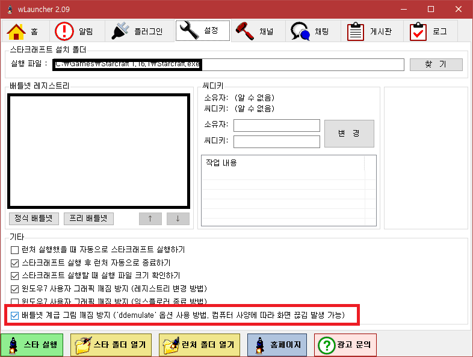
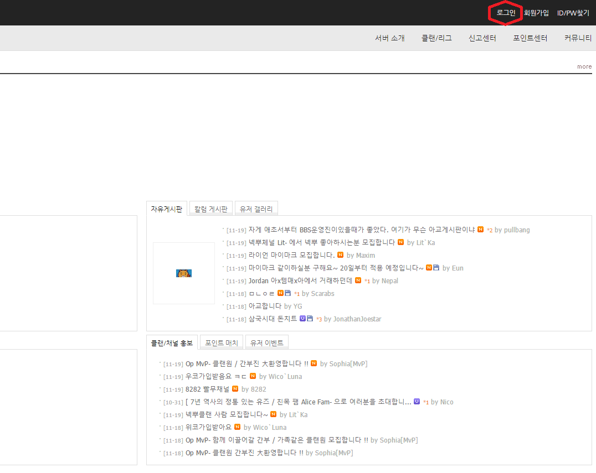
1. 아이디를 생성한 후 3일 뒤 꼭 한 번 피쉬서버 홈페이지에서 로그인하세요.
2. 홈페이지를 최초 로그인을 한 시점부터 1시간당(모바일 or PC) 100p가 적립됩니다.
※ 주의사항 1: 자신의 비밀번호가 쉬우면 변경 후 2~3분 가량 기다렸다 접속하세요.
※ 주의사항 2: 1시간 미만 접속하고 로그아웃하면 시간은 초기화 됩니다.
'/finger 내아디'를 해서 접속시간을 계산하세요.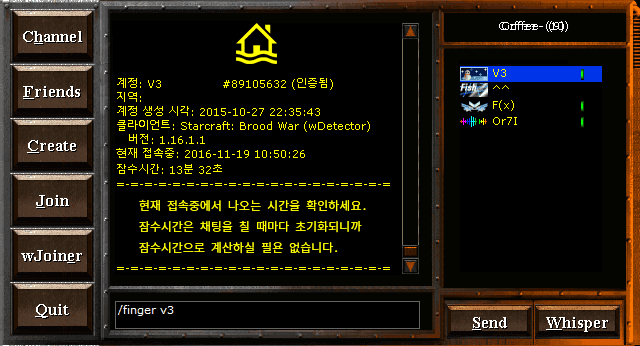
나머지는 직접 접속하셔서 구경해보세요.
홈페이지 접속하기
이 방법은 '/j Coffee-' 를 쳐서 Coffee- 채널로 가기보단
F6키를 눌러서 바로 Coffee- 채널로 갈 수 있도록 도와주는 방법입니다.
1. wLauncher를 실행한 후 플러그인에서 wDetector 클릭 후
설정 버튼을 누른다.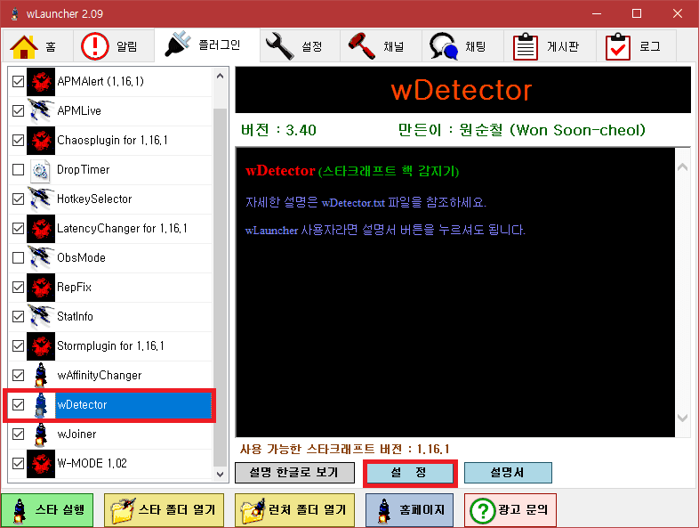
2. 'MyChannel1' 를 Ctrl+F 키로 찾은 후 아래 사진처럼 바꾸세요.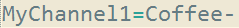
끝. 스타 재실행 후, 이제 F6키로 간편히 Coffee- 채널을 접속할 수 있습니다. ^^
이 방법은 상대방이 채팅을 길게 쳐도 보이도록 도와주는 방법입니다.
1. wLauncher를 실행한 후 플러그인에서 wDetector 클릭 후
설정 버튼을 누른다.
2. 'FilterChatLength' 를 Ctrl+F 키로 찾은 후 아래 사진처럼 바꾸세요.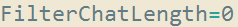
끝. 스타 재실행 후, 이제 긴 채팅도 잘 보이게 됍니다. ^^
'/finger 아디'를 했을 때 아래 사진처럼 프로필을 꾸미는 방법을 알아보겠습니다.
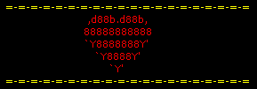 - by V3 (2015)
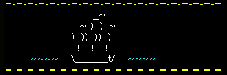 - by V3 (2015)
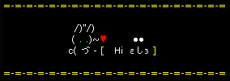 - by V3 (2015)
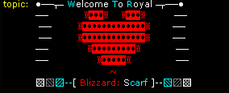 - by V3 (2015)
※ 토픽도 프로필 꾸미기와 똑같은 방식으로 꾸밀 수 있습니다.
1. '/j 채널' 명령어를 이용해 채널로 이동한다.
2. 우측에 자신의 아이디를 더블 클릭한다.
3. 아래 파일을 이용하여 프로필을 꾸민다.
(※ 사용 가능한 문자, 색상, 예시가 들어있습니다. 특문 제보: V3)